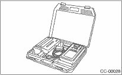
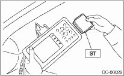
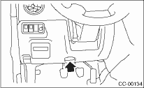
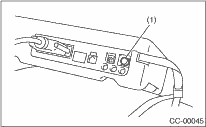

The on-board diagnosis function of the cruise control system uses Subaru Select Monitor.
The on-board diagnosis function operates in two categories, which are used depending on the type of problems;
1. Cruise Control Cancel Conditions Diagnosis:
(1) This category of diagnosis requires actual vehicle driving in order to determine the cause, as when cruise speed is cancelled during driving although cruise cancel condition is not entered.
(2) Cruise control memory in ECM stores the cancel condition (Code No.) which occurred during driving. When there are multiple cancel conditions (Code No.), they are shown on the Subaru Select Monitor.
CAUTION:
• The cruise control memory stores not only the cruise “cancel” which occurred (although “cancel” operation is not entered by the driver), but also the “cancel” condition input by the driver.
• The content of the latest memory (the latest code) is cleared when the ignition switch is turned to OFF. However, the memory content of diagnosis for switches related to systems and cruise control is maintained as the failure history (memory code) even after the ignition switch is turned to OFF.
2. Real-time Diagnosis:
Real-time diagnosis function is used to determine whether or not the input signal system is in good order, according to signal emitted from switches, sensors, etc.
(1) Vehicle cannot be driven at cruise speed when the problem occurs in the cruise control system or relevant circuits.
(2) Monitor the signal conditions from switches and sensors.
2. CRUISE CONTROL CANCEL CONDITIONS DIAGNOSIS
1. Prepare the Subaru Select Monitor kit.

2. Connect the diagnosis cable to the Subaru Select Monitor.
3. Insert the cartridge to the Subaru Select Monitor. 

4. Connect the Subaru Select Monitor to the data link connector.
(1) Data link connector is located in the lower portion of the instrument panel (on the driver’s side).

(2) Connect the diagnosis cable to the data link connector.
5. Start the engine and turn the cruise control main switch to ON.
6. Turn the Subaru Select Monitor switch to ON.

|
(1) |
Power switch |
7. On the «Main Menu» display screen, select the {2. Each System Check} and press the [YES] key.
On the system selection display screen, select the {Engine Control System} and press the [YES] key. Press the [YES] key after the information of engine type is displayed.
8. Drive vehicle at 40 km/h (25 MPH) or more and set the cruise control.
CAUTION:
• When performing diagnosis, observe the legal speed limit on the road.
• DTC will also appear when cruise control is canceled due to the driving operation of the driver. Do not confuse them.
• To get assisted in performing diagnosis during driving, drive with an assistant and have the select monitor operated.
9. If the set cruise speed is canceled by itself (canceled without any cancel operation such as brake operation), or if the cruise control cannot be set even set operation is performed, select {Check Cancel Code} on the engine malfunction diagnosis screen, press the [YES] key, and a DTC will appear on select monitor display.
NOTE:
There are {Latest Code} and {Memory Code} in DTC. The latest code that occurred during this confirmation driving appears in the {Latest Code}, and codes of the past driving appear in the {Memory Code}. Additionally, the DTCs of diagnosis for switches related to system and cruise control also appear in the {Memory Code}.
10. Perform the DTC memory clear operation for engine. DTCs for switches related to system and cruise control are cleared by the memory clear operation of the engine side.
NOTE:
DTCs will be cleared when ignition switch is turned to OFF.
1. Connect the Subaru Select Monitor.
2. Turn the ignition switch and cruise control main switch to ON.
3. Turn the Subaru Select Monitor switch to ON.
4. On the «Main Menu» display screen, select the {2. Each System Check} and press the [YES] key.
5. On the «System Selection Menu» display screen, select the {Engine Control System} and press the [YES] key.
6. Press the [YES] key after the information of engine type has been displayed.
7. On the «Engine Diagnosis» screen, select the {Current Data Display/Save}, and then press the [YES] key.
8. Make sure that normal indication is displayed when controls are operated as indicated below:
• Depress and release the brake pedal. (Stop light & brake switch is turned to ON.)
• Turn the command switch to ON.
• Turn the «RESUME/ACCEL» switch to ON.
• Turn the «CANCEL» switch to ON. (The command switch and «RESUME/ACCEL» switch are turned to ON at the same time.)
• Depress or release the clutch pedal.
• Place the shift lever in any position other than neutral.
NOTE:
• For details concerning operation procedures, refer to the “SUBARU SELECT MONITOR OPERATION MANUAL”.
• For the DTC, refer to the List of Diagnostic Trouble Code (DTC).